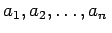
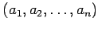
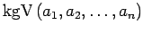
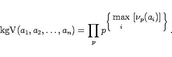
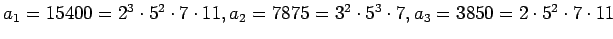
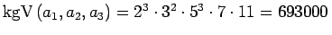

Inhalt Index DeskTop Bronstein

 Algebra und Diskrete Mathematik Elementare Zahlentheorie Teilbarkeit
Algebra und Diskrete Mathematik Elementare Zahlentheorie Teilbarkeit


Für ganze Zahlen , von denen keine gleich 0 ist, wird die kleinste Zahl in der Menge der positiven gemeinsamen Vielfachen von  das kleinste gemeinsame Vielfache von genannt und mit  bezeichnet. Sind die kanonischen Primfaktorenzerlegungen (5.253a) von gegeben, dann gilt:
|  | (5.257) |
| Beispiel |
|
Für die Zahlen  gilt . |